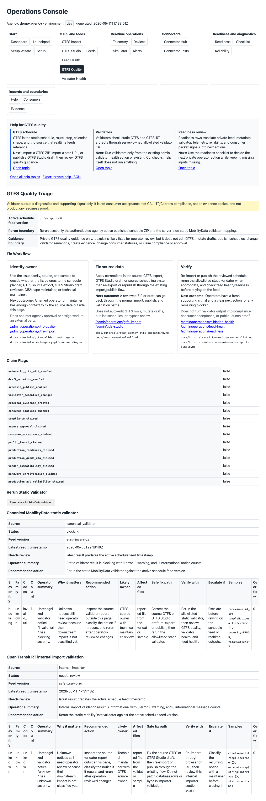
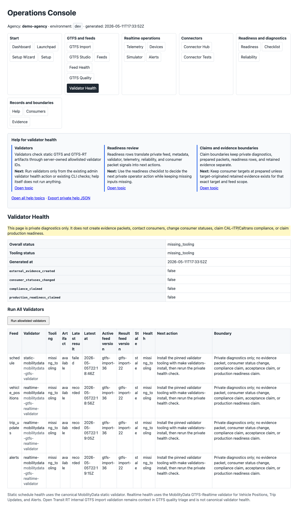

Agency Operations Cockpit / Start Here
Local/demo product screenshot showing the private operator dashboard and navigation entry points.
Private Operations Console tour
Use this page to recognize the current browser-first Operations Console path. Existing screenshots are local/demo documentation aids only. If a screenshot is stale or unavailable, this site does not fake it; the surface is shown as an annotated text card instead.
These images help identify the product shape. They are not retained evidence and should not be treated as public proof.
Local/demo product screenshot showing the private operator dashboard and navigation entry points.

Local/demo product screenshot showing readiness rows, next actions, and claim-boundary context.

Local/demo product screenshot showing grouped setup, feed, telemetry, and diagnostics checks.

Local/demo product screenshot showing static GTFS diagnostics and operator-facing fix guidance.

Local/demo product screenshot showing private validator tooling and artifact health diagnostics.

Local/demo product screenshot showing committed synthetic scenarios and safe simulator command guidance.
When screenshots are unavailable or stale, use these annotated route cards. Do not invent screenshots.
/admin/operations
First browser concept. Shows role paths, first-run tasks, five feed URL copy values, and claim boundaries.
/admin/operations/gtfs-import
Admin-only ZIP upload or safe URL import using the existing import pipeline and temporary runtime ZIP storage.
/admin/operations/feed-health
Five public feed paths, current signals, validator context, health context, and next actions.
/admin/operations/readiness
Plain-language rows that explain current signals and what they do not prove.
/admin/operations/gtfs-quality
Canonical static validator and internal importer triage with likely owner, safe fix path, and verification guidance.
/admin/operations/validation-health
Validator tooling, feed artifacts, latest reports, stale state, and allowlisted admin reruns.
/admin/operations/devices
Device binding status, one-time token rotation, latest telemetry context, and credential boundaries.
/admin/operations/telemetry
Accepted observations, stale threshold, assignment state, confidence, and unknown or stale rows.
/admin/operations/telemetry-simulator
Committed synthetic scenarios and copyable operator-shell commands. The page does not send telemetry itself.
/admin/operations/connectors
Telemetry, prediction, validator, monitoring/export, and discovery connector boundaries.
/admin/operations/connectors/tests
Offline synthetic checks for connector manifests and adapter contracts. No commands run from the browser.
/admin/operations/maintenance
Weekly/monthly checks, backup and restore configuration presence, support summary guidance, and technical-helper cases.
/admin/operations/help
Plain-language topics for GTFS, realtime, validators, telemetry, connectors, readiness, and evidence boundaries.
The Feed Health and Start Here surfaces should make these easy to copy or inspect.
| Feed | Path | Boundary |
|---|---|---|
| Discovery metadata | /public/feeds.json | Listing does not prove source-of-truth website publication. |
| GTFS Schedule | /public/gtfs/schedule.zip | Fetching does not prove validator-clean status or agency approval. |
| Vehicle Positions | /public/gtfsrt/vehicle_positions.pb | Availability does not prove real-device reliability or consumer acceptance. |
| Trip Updates | /public/gtfsrt/trip_updates.pb | Availability does not prove production-grade ETA quality. |
| Alerts | /public/gtfsrt/alerts.pb | Availability does not prove consumer display or disruption workflow completeness. |
These images are local/demo product documentation aids. They do not prove production readiness, CAL-ITP/Caltrans compliance, agency adoption or approval, consumer submission or acceptance, final-root readiness, hosted SaaS availability, SLA coverage, vendor compatibility, hardware certification, or production-grade ETA quality.